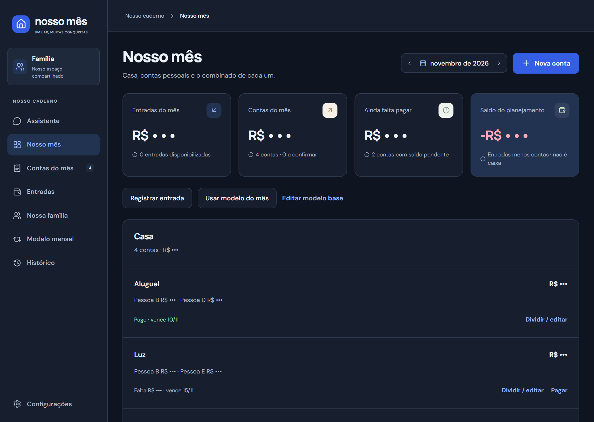

PORTFÓLIO DE DESENVOLVIMENTONosso mês: do caderno de casa ao app.
“Quanto ficou pra mim?” e “quanto falta pagar?” são perguntas diferentes. Transformei o caderno da família em um aplicativo que separa o combinado do que realmente foi pago.
01 · O mês em uma tela
Luz, internet e aluguel ficam reunidos no caderno. Cada perfil acompanha apenas as contas liberadas para ele.

02 · Dividir não é pagar
A divisão registra a parte combinada de cada pessoa. Um pagamento parcial reduz a pendência sem alterar esse acordo.
03 · Perguntar em vez de procurar
O assistente também atende pelo Telegram. A IA interpreta a pergunta, e o sistema calcula a resposta a partir dos registros autorizados.